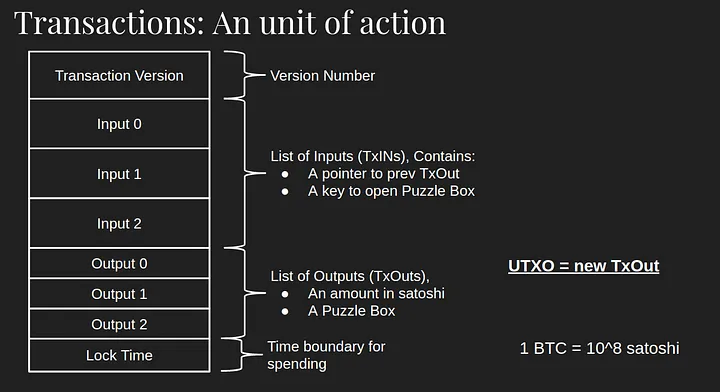
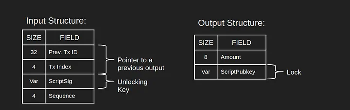
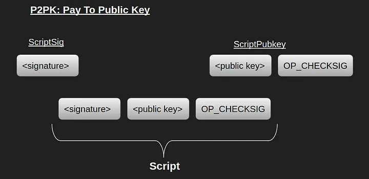
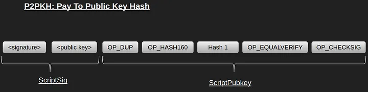

<!doctype html>
<html>
  <head>
    <meta charset="utf-8">
    <meta name="viewport" content="width=device-width, initial-scale=1.0, maximum-scale=1.0, user-scalable=no">

    <title>Bitcoin script</title>

    <link rel="stylesheet" href="reveal.js/css/reveal.css">
    <link rel="stylesheet" href="reveal.js/css/theme/league.css" id="theme">
    <link rel="stylesheet" href="extensions/plugin/line-numbers/line-numbers.css">
    <link rel="stylesheet" href="extensions/css/highlight-styles/zenburn.css">
    <link rel="stylesheet" href="extensions/css/custom.css">

    <style>
      .reveal h1, .reveal h2, .reveal h3, .reveal h4, .reveal h5 { text-transform: none; }
    </style>

    <script>
      var link = document.createElement( 'link' );
      link.rel = 'stylesheet';
      link.type = 'text/css';
      link.href = window.location.search.match( /print-pdf/gi ) ? 'reveal.js/css/print/pdf.css' : 'reveal.js/css/print/paper.css';
      document.getElementsByTagName( 'head' )[0].appendChild( link );

      function set_address(self, remote, local) {
        if (window.location.search.match("local")) {
          self.href = local;
        } else {
          self.href = remote;
        }
      }
    </script>

    <meta name="description" content="Compile-time reflections">
    <meta name="author" content="Kris Jusiak">
    <meta name="apple-mobile-web-app-capable" content="yes">
    <meta name="apple-mobile-web-app-status-bar-style" content="black-translucent">
  </head>

  <body>
    <div class="reveal">
      <div class="slides">
          <script type="text/template">
          </script>
          </section>

          <section data-markdown=""
                   data-separator="^====+$"
                   data-separator-vertical="^----+$">
          <script type="text/template">
<a href="https://cppcon.org/"></a>

---

## Bitcoin Script: Implementation Details and Use Cases


---

----

#### Agenda

- #### Bitcion Script
  <!-- .element: class="fragment" -->

  - #### Basic information
  <!-- .element: class="fragment" -->

  - #### Implementation details
  <!-- .element: class="fragment" -->

  - #### Examples
  <!-- .element: class="fragment" -->

  - #### Use cases
  <!-- .element: class="fragment" -->

  - #### Security and Future
  <!-- .element: class="fragment" -->

----

#### Bitcoin Script - Basic information

- Designed for verifying transactions in the network
<!-- .element: class="fragment" -->

    - Every transaction has an associated script, and every node in the network, upon receiving a transaction, executes the Script in their own local machine
     <!-- .element: class="fragment" -->

    - Once transactions get added in the blockchain they become immutable

  - Opens door for smart contracts
<!-- .element: class="fragment" -->

  - Scripting abilities have been in the Bitcion source from the beginning
<!-- .element: class="fragment" -->

----


#### Bitcoin Script - Basic information

  - Programmable Money - Digital currency with attached programs
  <!-- .element: class="fragment" -->

  - Distributed computational network where arbitrary programs can get executed inside different machines to result in the exact same output
  <!-- .element: class="fragment" -->

----

#### Bitcoin Script - Transaction

```cpp
Tranasction [network] -> Node -> execute script == valid ? propagate to peers : stop
```
<!-- .element: class="fragment" -->


<!-- .element: class="fragment" -->

#### - Transaction Output - Includes scriptPubKey specifying conditions for unlocking
<!-- .element: class="fragment" -->

#### - Transaction Input - Includes scriptSig with signature and public key to satisfy the scriptPubKey
<!-- .element: class="fragment" -->

----

#### Bitcoin Script - Transaction


<!-- .element: class="fragment" -->

#### Scripting is all about this locking and unlocking mechanism
<!-- .element: class="fragment" -->

----

#### Bitcion Script - Implementation details


<!-- .element: class="fragment" -->

---

### Script is a programming language
<!-- .element: class="fragment" -->

#### - Stack-based,
<!-- .element: class="fragment" -->

#### - Forth like - https://en.wikipedia.org/wiki/Forth_(programming_language)
<!-- .element: class="fragment" -->

#### - Turing incomplete (no loops, no jumps)
<!-- .element: class="fragment" -->

#### - Written in Reverse Polish Notation (RPN)
<!-- .element: class="fragment" -->

    ```cpp
    EXPR: 2 + 2 = 4
    RPN:  2 2 + 4 = 
    ```
    <!-- .element: class="fragment" -->

----

#### Bitcoin Script - Implementation details

- ##### https://github.com/bitcoin/bitcoin/blob/main/src/script
<!-- .element: class="fragment" -->

- ##### Bitcion Script Wiki - https://en.bitcoin.it/wiki/Script
<!-- .element: class="fragment" -->

----

#### Bitcoin Script - Implementation details

#### A Script program consists
<!-- .element: class="fragment" -->

#### - `OP_CODES` - represent a certain operation, like addition, substraction, etc.
<!-- .element: class="fragment" -->

  - https://github.com/bitcoin/bitcoin/blob/master/src/script/script.h

    Constants

    Flow control
      ```cpp
      Word	    Opcode	  Hex	    Input	  Output
      OP_NOP    97        0x61    -       -
      OP_AND   
      ```

    Stack

    Splice

    Bitwise logic

    Arithmetic

    Locktime
  

#### - `Data` - everything that is not an OP_CODE is interpreted as raw data
<!-- .element: class="fragment" -->

----

##### Bitcoin Script Debugging Utilities - https://github.com/bitcoin-core/btcdeb

----

#### Bitcoin Script - Formats

- Human readable
<!-- .element: class="fragment" -->

```sh
OP_DUP OP_HASH160 897c81ac37ae36f7bc5b91356cfb0138bfacb3c1 OP_EQUALVERIFY OP_CHECKSIG
```
<!-- .element: class="fragment" -->

- Hex
<!-- .element: class="fragment" -->

```cpp
```
<!-- .element: class="fragment" -->

- Binary
<!-- .element: class="fragment" -->

```cpp
76a914897c81ac37ae36f7bc5b91356cfb0138bfacb3c188ac
```
<!-- .element: class="fragment" -->

-----

#### Bitcoin Script - Execution

#### https://github.com/bitcoin/bitcoin/blob/master/src/script/interpreter.cpp
<!-- .element: class="fragment" -->

# pseudo code
```cpp
if execution_counter points to data
  push data
else if is opcode and opcode is enabled
  if op_code == ADD # requires 2 elements
    a1 = pop
    a2 = pop
    add a1 a2
    push
  ...

if top stack == 1
  return valid
else
  return invalid
```
<!-- .element: class="fragment" -->

----

#### Bitcoin Script - Locking/Unlocking

- Locking - ScriptPubKey
<!-- .element: class="fragment" -->

- Unlocking - ScriptSig
<!-- .element: class="fragment" -->

  “Unlocking” is the process of concatenating ScriptSig and ScriptPubkey, interpreting it as a Script program, and upon execution leaves 1 as the top stack element.
<!-- .element: class="fragment" -->

----

#### Bitcoin Script - Example

```cpp
ScriptPubkey: 2 2 OP_ADD OP_EQUAL
ScriptSig: 4
```
<!-- .element: class="fragment" -->

```sh
btcdeb "[2 2 OP_ADD 4 OP_EQUAL]"
```

```sh
script   |  stack 
---------+--------
2        | 
2        | 
OP_ADD   | 
4        | 
OP_EQUAL | 
#0000 2
btcdeb> step
                <> PUSH stack 02
script   |  stack 
---------+--------
2        |      02
OP_ADD   | 
4        | 
OP_EQUAL | 
#0001 2
btcdeb> step
                <> PUSH stack 02
script   |  stack 
---------+--------
OP_ADD   |      02
4        |      02
OP_EQUAL | 
#0002 OP_ADD
btcdeb> step
                <> POP  stack
                <> POP  stack
                <> PUSH stack 04
script   |  stack 
---------+--------
4        |      04
OP_EQUAL | 
#0003 4
btcdeb> step
                <> PUSH stack 04
script   |  stack 
---------+--------
OP_EQUAL |      04
         |      04
#0004 OP_EQUAL
btcdeb> step
                <> POP  stack
                <> POP  stack
                <> PUSH stack 01
script   |  stack 
---------+--------
         |      01
```

```sh
script   |  stack 
---------+--------
2        | 
2        | 
OP_ADD   | 
OP_EQUAL | 
#0000 2
```

----

#### Bitcoin Script - Pay To PubKey (P2PK) (Not used anymore)



```cpp
scriptPubKey: <pubKey> OP_CHECKSIG
scriptSig:    <sig>
```


```cpp
OP_CHECKSIG	172	0xac	sig pubkey	True / false	The entire transaction's outputs, inputs, and script (from the most recently-executed OP_CODESEPARATOR to the end) are hashed. The signature used by OP_CHECKSIG must be a valid signature for this hash and public key. If it is, 1 is returned, 0 otherwise.
```

----

#### Bitcoin Script - PayToPubKeyHash (P2PKH) - Standard Transaction to Bitcoin address



```cpp
scriptPubKey: OP_DUP OP_HASH160 <pubKeyHash> OP_EQUALVERIFY OP_CHECKSIG
scriptSig: <sig> <pubKey>
```

```cpp
OP_HASH160	169	0xa9	in	hash	The input is hashed twice: first with SHA-256 and then with RIPEMD-160.
```

----

#### Bitcoin Script - Use cases

#### - Smart Contracts
A smart contract is a program that executes in an automated and uncensorable way

A smart contract is a computer protocol intended to digitally facilitate, verify, or enforce the negotiation or performance of a contract. Smart contracts allow the performance of credible transactions without third parties. These transactions are trackable and irreversible. — wikipedia
Because each of the script of a transaction is independently executed by each node in the network, there is no central server to attack in order to stop the execution

#### - Lightning network is nothing but a very elaborate Bitcoin script known as HTLC (Hashed Time-Locked Contracts)

```cpp
scriptPubKey:
  OP_IF
  [HASHOP] <digest> OP_EQUALVERIFY OP_DUP OP_HASH160 <seller pubkey hash>
  OP_ELSE
  <num> [TIMEOUTOP] OP_DROP OP_DUP OP_HASH160 <buyer pubkey hash>
  OP_ENDIF
  OP_EQUALVERIFY
  OP_CHECKSIG

scriptSig: <sig>
```

----

#### Bitcoin Script - Safety and Future

```cpp
OP_Codes
  Disabled: OP_CAT, OP_SUBSTR, OP_MUL, OP_DIV, OP_MOD, ...
  Lmited: OP_RETURN (80 bytes) - data embeeding
```
  <!-- .element: class="fragment" -->

----

#### Bitcoin Script - Future

Bitcoin Improvement Proposal (BIP) - https://github.com/bitcoin/bips

  - BIP 119: CHECKTEMPLATEVERIFY (CTV)
  - BIP 342: Taproot Script Path Spending
    - ...

----

#### Bitcoin Script vs ...

- BTC script vs EVM

  - cheap in terms of computational resources, doesn't need a resource metering system like gas

> Solidity (EVM) - gas fees - Gas is a unit that measures the amount of computational effort required to execute operations on the Ethereum network

```cpp
// SPDX-License-Identifier: MIT
pragma solidity >=0.6.0 <0.9.0;

contract HelloWorld {
  function helloWorld() external pure returns (string memory) {
      return "Hello, World!";
  }
}
```

----

Summary

- Bitcoin script is very simple but powerful

- It's Hard to write custom smart contracts of arbitrary complexity

  - limitied flexibility but increased safety

----

### Further readings

- ##### Bitcoin Script Source Code - https://github.com/bitcoin/bitcoin/tree/master/src/script
<!-- .element: style="text-align:left" -->

- ##### Bitcion Script Wiki - https://en.bitcoin.it/wiki/Script
<!-- .element: style="text-align:left" -->

- ##### Opcode Explained - https://opcodeexplained.com
<!-- .element: style="text-align:left" -->

- ##### Bitcoin Script Debugging Utilities - https://github.com/bitcoin-core/btcdeb
<!-- .element: style="text-align:left" -->

https://ethereum.org/en/developers/docs/evm | https://soliditylang.org

---

##### [kris@jusiak.net](mailto:kris@jusiak.net) | [@krisjusiak](https://twitter.com/krisjusiak) | [linkedin.com/in/kris-jusiak](https://www.linkedin.com/in/kris-jusiak)
          </script>
        </section>

      </div>
    </div>

    <script src="reveal.js/lib/js/head.min.js"></script>
    <script src="reveal.js/js/reveal.js"></script>

    <script>

      // Full list of configuration options available at:
      // https://github.com/hakimel/reveal.js#configuration
      Reveal.initialize({

        // Display controls in the bottom right corner
        controls: false,

        // Display a presentation progress bar
        progress: false,

        // Display the page number of the current slide
        slideNumber: 'c/t',

        // Push each slide change to the browser history
        history: true,

        // Enable keyboard shortcuts for navigation
        keyboard: true,

        // Enable the slide overview mode
        overview: false,

        // Vertical centering of slides
        center: true,

        // Enables touch navigation on devices with touch input
        touch: true,

        // Loop the presentation
        loop: false,

        // Change the presentation direction to be RTL
        rtl: false,

        // Turns fragments on and off globally
        fragments: true,

        // Flags if the presentation is running in an embedded mode,
        // i.e. contained within a limited portion of the screen
        embedded: false,

        // Flags if we should show a help overlay when the questionmark
        // key is pressed
        help: true,

        // Flags if speaker notes should be visible to all viewers
        showNotes: false,

        // Number of milliseconds between automatically proceeding to the
        // next slide, disabled when set to 0, this value can be overwritten
        // by using a data-autoslide attribute on your slides
        autoSlide: 0,

        // Stop auto-sliding after user input
        autoSlideStoppable: true,

        // Enable slide navigation via mouse wheel
        mouseWheel: false,

        // Hides the address bar on mobile devices
        hideAddressBar: true,

        // Opens links in an iframe preview overlay
        previewLinks: false,

        // Transition style
        transition: 'none', // none/fade/slide/convex/concave/zoom

        // Transition speed
        transitionSpeed: 'default', // default/fast/slow

        // Transition style for full page slide backgrounds
        backgroundTransition: 'none', // none/fade/slide/convex/concave/zoom

        // Number of slides away from the current that are visible
        viewDistance: 1,

        // Parallax background image
        parallaxBackgroundImage: '', // e.g. "'https://s3.amazonaws.com/hakim-static/reveal-js/reveal-parallax-1.jpg'"

        // Parallax background size
        parallaxBackgroundSize: '', // CSS syntax, e.g. "2100px 900px"

        // Number of pixels to move the parallax background per slide
        // - Calculated automatically unless specified
        // - Set to 0 to disable movement along an axis
        parallaxBackgroundHorizontal: null,
        parallaxBackgroundVertical: null,

        // Optional reveal.js plugins
        dependencies: [
          { src: 'reveal.js/lib/js/classList.js', condition: function() { return !document.body.classList; } },
          { src: 'reveal.js/plugin/markdown/marked.js', condition: function() { return !!document.querySelector( '[data-markdown]' ); } },
          { src: 'reveal.js/plugin/markdown/markdown.js', condition: function() { return !!document.querySelector( '[data-markdown]' ); } },
          { src: 'reveal.js/plugin/highlight/highlight.js', async: true, callback: function() { hljs.initHighlightingOnLoad(); } },
          { src: 'reveal.js/plugin/zoom-js/zoom.js', async: true },
          { src: 'reveal.js/plugin/notes/notes.js', async: true },
          { src: 'extensions/plugin/line-numbers/line-numbers.js' }
        ]
      });

      function handleClick(e) {
        if (1 >= outerHeight - innerHeight) {
          document.querySelector( '.reveal' ).style.cursor = 'none';
        } else {
          document.querySelector( '.reveal' ).style.cursor = '';
        }

        e.preventDefault();
        if(e.button === 0) Reveal.next();
        if(e.button === 2) Reveal.prev();
      }
    </script>

  </body>
</html>
